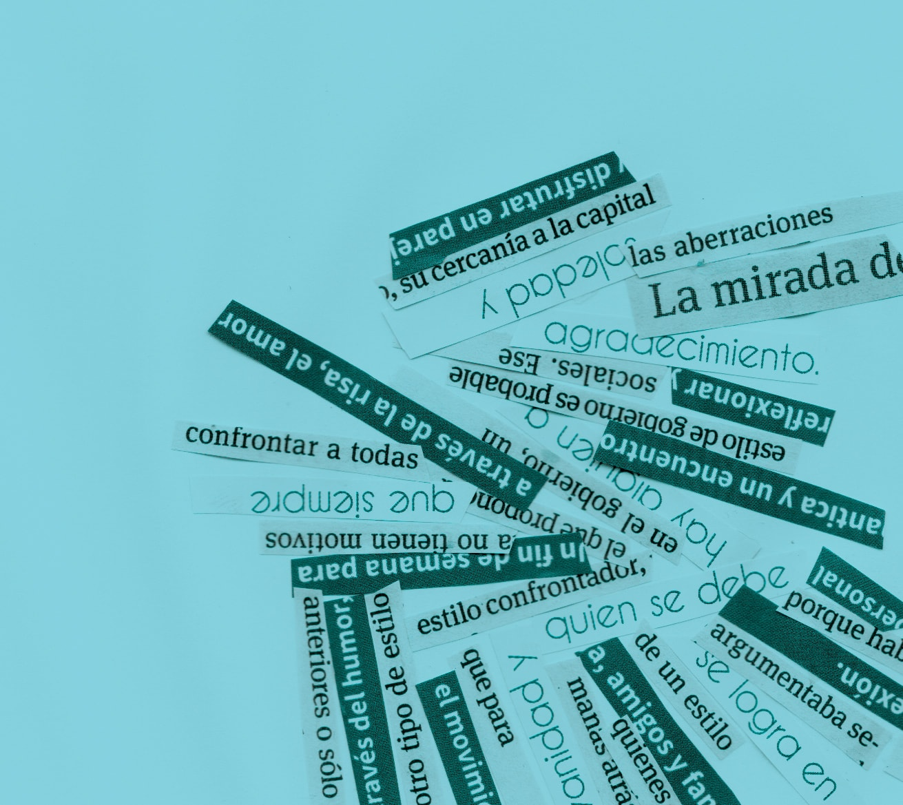

Santiago Cardozo González. Maestro. Profesor de Idioma Español (IPA). Magíster en Ciencias Humanas, opción “Lenguaje, cultura y sociedad”, FHUCE, UdelaR. Doctorando en lingüística, FHUCE, UdelaR. Profesor de Español I en Traductorado
Público (FDER, UdelaR), de Teoría Gramatical (IPA) y de Lengua I (FIC, UdelaR). Publicaciones: “El colimador fallido” en Prohibido Pensar. Política; “Sujeto, lenguaje, discurso”, Revista speu.
Resumen
En el presente artículo planteo la idea de que el discurso es, respecto del sujeto hablante, un ‘lugar’ de impertenencia y desposesión, en el sentido de que aquel no lo domina plenamente y que, incluso, es un efecto de las prácticas discursivas,
de la actividad de decir yo.
A partir de esta perspectiva, que reconoce su punto de apoyo fundamental en la lingüística de la enunciación inaugurada por Benveniste y en el psicoanálisis lacaniano, discuto la idea de la realidad como un conjunto de objetos extralingüísticos
o extradiscursivos. En tal sentido, argumento a favor de que lo que llamamos realidad es un efecto del lenguaje, de modo que este no puede ser concebido como un instrumento de comunicación.
Por fin, examino el título de un libro de texto de Geografía del Ciclo Básico uruguayo a la luz de los aspectos teóricos planteados, mostrando cómo funciona la relación transparencia/opacidad designativas y los efectos de sentido que produce.
Title: The discourse as unbelonging and dispossession.
Abstract
In this paper I propose the idea that discourse is, with respect to the speaking subject, a ‘place’ of unbelonging and dispossession, in the sense that they do not fully dominate it, and furthermore, it is an effect of discursive practices, of the
activity of saying I.
rom this perspective, which recognizes its fundamental point of support in the linguistics of the enunciation established by Benveniste and in Lacanian psychoanalysis, I discuss the idea of reality as a set of extra-linguistic or extradiscursive
objects. In this sense, I argue that what we call reality is an effect of language, so that it can not be conceived as an instrument of communication.
Finally, I examine the title of a textbook of Geography of the Uruguayan Basic Cycle in the light of the theoretical aspects raised, showing how the relation between designative transparency and opacity works, and the effects of meaning that it
produces.
Como lo mostraba Benveniste (1997), la característica o la propiedad fundamental del lenguaje humano es la reflexividad, la capacidad de tomarse como objeto de su propio decir. Así, explicaba el lingüista francés retomando la vieja distinción aristotélica
entre logos y phoné; los animales se comunican, y lo hacen de muy diversas maneras, pero no poseen lenguaje. En consecuencia, por muy compleja que sea la comunicación animal, por muy sofisticados que sean los mecanismos que emplean para
transmitirse sus mensajes, un animal puede expresar dolor, satisfacción, enojo (pues tiene la voz, la phoné), pero no puede distinguir el bien del mal, lo bueno de lo malo, lo justo de lo injusto, lo conveniente para la vida en sociedad
de lo inconveniente, como sí puede hacerlo el hombre, dado que tiene lenguaje, logos (naturalmente, el hombre también puede expresar dolor, satisfacción, etc., porque también posee phoné, que constituye un nivel irreductible; pero, en todo caso,
el logos le permite al hombre pensar la phoné, razonarla, producir una teoría sobre ella).
Dado, entonces, que el hombre posee lenguaje, es posible que se articule algo como lo social, lo ético y lo político. Vale decir, el lenguaje le permite al hombre abandonar, por así decirlo, el nivel irreductible del orden doméstico, de la casa
(oikos) y situarse en el orden de lo público, de lo político (polis), que es una teoría acerca de la distinción oikos/polis como el trabajo simbólico de socializar los cuerpos que habitan el orden doméstico (la zōé); en otros
términos, la polis es el espacio de lenguaje al que se trae la vida doméstica, la vida en tanto que zōé, para convertirla en una vida calificada políticamente (bíos). Como explica Aristóteles (en Agamben, 2010: 17):
Sólo el hombre, entre los vivientes, posee el lenguaje. La voz es el signo del dolor y del placer, y, por eso, la tienen también el resto de los vivientes (su naturaleza ha llegado, en efecto, hasta la sensación del dolor y del placer y a transmitírsela unos a otros); pero el lenguaje existe para manifestar lo conveniente y lo inconveniente, así como lo justo y lo injusto. Y es propio de los hombres, con respecto a los demás vivientes, el tener sólo ellos el sentido del bien y del mal, de lo justo y de lo injusto y de las demás cosas del mismo género, y la comunidad de estas cosas es la que constituye la casa y la ciudad.
En definitiva, el lenguaje es cualitativamente distinto de la voz, y es el que define al hombre como tal. Así pues, no tenemos lenguaje porque somos hombres, porque, al ser hombres, hemos desarrollado una sofisticada herramienta comunicativa, sino
que somos hombres porque tenemos lenguaje. Las cosas son más bien al revés: es el lenguaje el que nos convierte, por así decirlo, en hombres, razón por la cual debemos ver en el lenguaje el elemento propiamente constitutivo del hombre, no un instrumento
exterior del que el sujeto puede servirse para expresar sus deseos, sus gustos, sus pensamientos, etc. (aunque también sea esto imaginariamente). El hombre no mantiene con el lenguaje una relación de exterioridad, como la puede mantener con cualquier
otra herramienta (como la pala, la rueda, una computadora), dado que, como sostiene Benveniste (1997), el lenguaje está en la naturaleza del hombre, por lo cual nunca encontraremos un primer hombre que, para comunicarse con otro, invente la herramienta
del lenguaje: el lenguaje está siempre ya funcionando.
En realidad, la comparación del lenguaje con un instrumento –y con un instrumento material ha de ser, por cierto, para que la comparación sea sencillamente inteligible– debe hacernos desconfiar mucho, como cualquier noción simplista acerca del lenguaje. Hablar de instrumento es oponer hombre y naturaleza. El pico, la flecha, la rueda no están en la naturaleza. Son fabricaciones. El lenguaje está en la naturaleza del hombre, que no lo ha fabricado. […] Nunca llegamos al hombre separado del lenguaje ni jamás lo vemos inventarlo. Nunca alcanzamos al hombre reducido a sí mismo, ingeniándose para concebir la existencia del otro. Es un hombre hablante el que encontramos en el mundo, un hombre hablando a otro, y el lenguaje enseña la definición misma del hombre (Benveniste, 1997: 180).
Este punto, verdaderamente crucial en la consideración del lenguaje, por lo general es pasado rápidamente por alto, lo que entraña una serie de consecuencias que deben examinarse, la más importante de las cuales es el hecho de creer que las palabras
remiten a cosas del mundo en un juego biunívoco de coincidencias, como si entre el orden del lenguaje y el orden de la realidad no hubiera sino transparencia, una pasaje aproblemático de un lado al otro, con preeminencia de la realidad. Así, no
se advierte que el funcionamiento del lenguaje requiere, por defecto, la reificación del referente, de manera que está siempre ya instalado el imaginario referencial de acuerdo con el cual el lenguaje es, en primer lugar, una nomenclatura.
En la misma línea, el imaginario referencial o el pacto semántico (Núñez, 2012, 2016) producen la ilusión de que el sujeto es capaz de dominar el discurso que produce, ajustando las estrategias comunicativas a las intenciones o deseos que lo mueven
a decir ciertas cosas y no otras, y a decirlas de cierta manera y no de otra. La idea de un hablante dueño de sí mismo y del decir que pone en funcionamiento es solidaria, entonces, con la idea del lenguaje como un mero instrumento comunicativo
exterior a su usuario, quien lo moldea según sus necesidades. El hablante aparece, así, como una entidad homogénea, autosuficiente, plena, como lo Uno, y la realidad se recorta como ese otro lado del lenguaje que siempre ha estado ahí y que, ahora,
puede ser dicha por el efecto de la palabra, aunque esta palabra, finalmente, no pueda captar la infinita variedad de matices que constituyen a las cosas del mundo.
2. Lo propio y lo ajeno
...un animal puede expresar dolor, satisfacción, enojo (pues tiene la voz, la phoné), pero no puede distinguir el bien del mal, lo bueno de lo malo, lo justo de lo injusto, lo conveniente para la vida en sociedad de lo inconveniente, como sí puede hacerlo el hombre, dado que tiene lenguaje, logos (naturalmente, el hombre también puede expresar dolor, satisfacción, etc., porque también posee phoné, que constituye un nivel irreductible; pero, en todo caso, el logos le permite al hombre pensar la phoné, razonarla, producir una teoría sobre ella).
De lo antedicho se desprende la idea de que todo discurso se hace con la palabra que adviene de otro lugar, con la palabra ajena, de modo que no se puede pensar en la existencia de un locutor que gobierne plenamente su decir y sea capaz de hacer
coincidir palabras y cosas, sobre la base de un funcionamiento transparente del lenguaje –un funcionamiento en el modo referencial, diría Núñez (2012). Así, los ejemplos examinados arriba dan cuenta de un fenómeno discursivo irreductible,
de un real (Authier-Revuz, 2011) del discurso: el hecho de que el hablante siempre dice con otro hablante, que la palabra ajena es constitutiva de la propia; o, dicho de otra manera, que el discurso funciona de acuerdo con una
ley dialógica (Bajtín, 2003) según la cual no hay un hablante adámico que rompiera el silencio del universo por primera vez, sino que, por el contrario, lo que hay es un permanente e irreductible diálogo entre discursos (el contexto de
un discurso es, pues, otros discursos).
Esta tesis, de cuño bajtiniano, es llevada al extremo por Authier-Revuz (1995, 2011) al ser combinada con la tesis lacaniana de que el sujeto es un efecto del lenguaje, no una entidad cerrada, homogénea, que precediera al lenguaje y al discurso
que se pone en funcionamiento. El sujeto barrado (S), como se lo conoce –tesis de herencia freudiana– implica que el hablante es hablado por la lengua y que, por lo tanto, este no es amo y señor de su decir, no puede dominar a su antojo aquello
que dice, porque, entre otras cosas, es hablado igualmente por el inconsciente. Más adelante se verán algunas consecuencias relevantes que se desprenden de este postulado, en la medida en que, con él, se rechaza de plano la idea de una transparencia
referencial que hiciera coincidir las palabras con las cosas, así como el hablante con el oyente y las palabras y el discurso consigo mismos.
En este contexto, lo que me interesa plantear es que, precisamente allí donde se abre una brecha o una distancia en la ilusión del dominio de la lengua y del discurso; allí donde el hablante, por defecto, cree que dice exactamente las cosas que
quiere decir y de la forma como pretende hacerlo, se introduce una dimensión ético-política que es propia y exclusiva del lenguaje, una dimensión que, vale decir, funda lo social mismo como el espacio del logos. Así, dos ideas de sujeto se contraponen:
la una postula un sujeto psicológico, transparente para sí mismo y para el otro, que usa el lenguaje como una herramienta comunicativa para codificar lo que piensa o siente, de manera tal que el oyente, en el fenómeno comunicativo, es capaz de
decodificar plenamente y sin problemas lo que aquel dijo y quiso decir, esto es, puede reconocer las intenciones que han movido al hablante a decir lo que dice y de la forma que ha elegido hacerlo; la otra, enteramente opuesta, entiende que la
comunicación está gobernada por el malentendido y que todo transcurre, por así decirlo, en un escenario de opacidad en el que los sujetos no pueden decirlo todo, como tampoco pueden identificar las intenciones del otro y ni siquiera las suyas,
puesto que estas se hallan en un lugar inaccesible para el propio sujeto. Así, los interlocutores están irremediablemente desfasados uno respecto del otro, de la misma manera en que cada sujeto lo está respecto de sí mismo y del lenguaje que emplea.
De hecho, debe sostenerse que los sujetos son sujetos precisamente por el desfasaje que los constituye, y que son sujetos como un efecto del lenguaje, vale decir, es el lenguaje el que produce al sujeto y no este el que produce a aquel.
Así, la ajenidad que adviene para constituir la propiedad no es únicamente la voz de otro enunciador que, explícita o implícitamente, aparece convocada, sino también el empuje del inconsciente que introduce un factor de desequilibrio en el decir
de cualquier hablante, porque introduce una grieta en el hablante mismo, y el lenguaje como estructura simbólica que se articula en torno de una falla o un vacío constitutivos, inaccesible para cualquier sujeto, pero que produce efectos de desfasajes,
de corrimientos, en suma, un efecto de impertenencia y desposesión. El orden simbólico –el lenguaje– es precisamente lo que instala la relación entre sujetos y la atestigua, pero no como un orden cerrado sobre sí mismo, sino, por el contrario,
como un orden definicionalmente dañado y, por ende, abierto, lo que da lugar al sentido y a la interpretación.
3. El lenguaje, el vacío y la realidad
La tesis que quiero plantear aquí es la siguiente: la realidad es también un producto del lenguaje, lo que significa que no hay una realidad en cuanto tal por fuera de la red simbólica de los significantes (Lacan, 2011). En otras palabras, nunca
vamos a encontrar un punto exterior al lenguaje en el que finalmente demos con las cosas tal como son, en su prístina luminosidad, intocadas aún por la palabra, puras. En todo caso, y como lo explica Núñez (2016), el lenguaje funciona creando
su propio exterior, reificándolo como si estuviera hecho de cosas, de objetos. Así, el pacto semántico consiste en la creencia en que el lenguaje dice de algo que no es lenguaje y que, por lo tanto, no dice. La distinción lenguaje/realidad o lenguaje/mundo
es una distinción siempre ya simbólica, es decir, perteneciente al lenguaje, de manera que eso que, suponemos, está del otro lado o más allá del lenguaje no es sino un efecto necesario del propio lenguaje para poder funcionar
(y el lenguaje está siempre ya funcionando).
a realidad, a fin de cuentas, es menos una cosa, una sustancia, algo que existe por y en sí mismo, que el efecto fundamental del lenguaje, lo que nos obliga a funcionar en el régimen referencial de acuerdo con el cual pensamos que, efectivamente,
hay otro lado del lenguaje al que nos envían las palabras y que, cronológicamente, tiene preeminencia. En este sentido, dice Núñez (2012: 11):
Digamos que la reificación o la naturalización del referente entonces no es solo inevitable sino necesaria para el funcionamiento del lenguaje. Y la circularidad semiótica no es una falla del lenguaje: es su condición misma de posibilidad. El referente, anclaje ilusorio de la circularidad del lenguaje, es lo imposible-necesario […].
Y en otro lugar (2016: 56-57) explica:
La abstracción sustancialista no solamente empuja al referente a ser sustancia: al mismo tiempo empuja al lenguaje mismo a ser una cosa, una herramienta o una caja de herramientas, un intermediario entre dos abstracciones (el entendimiento y la realidad). Y por eso hasta cierto punto estamos obligados a aceptar y a “vivir dentro” del principio referencial ingenuo (digamos, positivista o sustancialista), en el cual ambos polos, lo-que-está-entre-barras o lo-que-está-entre-llaves, parecen tener una existencia independiente anterior a la lógica oposicional que los vincula (y por tanto uno de los dos, barras o llaves, tiende a ser entendido como la verdad del otro). Podría decirse que la lógica signo/referente, “interna al lenguaje”, se desdobla “hacia el exterior” en una correspondencia simple palabras/cosas: pensamos espontáneamente entonces no en una relación o en una lógica sino en entidades sustanciales (denotación, referencia, representación).
Nótese que el planteo que estamos haciendo implica que pensemos que antes de la palabra no había mundo ni no-mundo (realidad ni no-realidad), no había discontinuidad sobre un fondo de continuidad. Es, pues, la palabra la que introduce todas las
divisiones, y lo hace produciendo igualmente el fondo sobre el cual se recortan dichas divisiones; y, además, coloca este fondo como necesariamente anterior (en sentido lógico) a la operación discriminadora, es decir, a la abstracción lingüística:
las cosas recortadas y el fondo del que se recortan aparecen al unísono, pues el lenguaje puede ser entendido precisamente como la barra que separa las cosas de la realidad y el fondo respecto del cual se recortan como cosas.
Antes del lenguaje, entonces, no hay realidad ni no-realidad o, en todo caso, la realidad no es una instancia, valga el juego de palabras, realmente existente antes del lenguaje, sobre la cual este se proyecta para definir sus recortes.
La idea misma de una realidad solo puede aparecer a posteriori, una vez que tenemos lenguaje (la realidad es siempre retroactiva). Así pues, la relación realidad/lenguaje no es lineal, cronológica, sino lógica, conceptual, y es una relación
u oposición que solo puede provenir del lenguaje, ya instalado como tal.
Lo mismo vale para el yo, según lo explica Virno (2013): la oposición entre un yo (el que ahora habla) y un no-yo (el que todavía no habla y se sitúa ‘antes’ del hablar) no es previa al lenguaje, ni se la ubica en un entre sustancial,
efectivamente hallable en un ilusorio continuo en cuyos extremos estarían el yo y el no-yo, sino que resulta un efecto de la abstracción lingüística (en todo caso, esa zona intermedia o entre no serían otra cosa que la barra de la oposición
funcionando como el elemento fundamental de la propia oposición, gracias a la cual aparecen los extremos opuestos), de la misma manera en que no hay un interior y un exterior del lenguaje. Lo que tenemos es una oposición dialéctica que separa
las cosas como si fueran sustancias, objetos pero, en rigor, se trata de conceptos, de relaciones lógicas que le pertenecen al lenguaje.
Entonces, el sujeto, el yo que habla, no es una sustancia que se hace de la herramienta comunicativa del lenguaje, sino el producto de la actividad discursiva. Como lo señala Kristeva (1988: 279):
El sujeto no es, se hace y se deshace dentro de una topología compleja en que se incluye al otro y su discurso; no se podría hablar más del sentido de un discurso sin tomar en cuenta esta topología. El sujeto y el sentido no son, se producen en el trabajo discursivo […].
Asimismo, el lenguaje no es una máquina cerrada y autosuficiente, sino algo abierto, estructurado alrededor de un núcleo vacío inaccesible que impide que se pueda decir todo, que el propio lenguaje pueda hacer Uno con el mundo (Milner,
1998; Žižek, 2009, 2016; Authier-Revuz, 2011; Miller, 2015). Por ello, la realidad, suele decirse, es no-toda, y el lenguaje produce efectos de insuficiencia, pues, como todos sabemos, es común plantear que la realidad es infinitamente
más rica que las palabras disponibles para decirla y, en consecuencia, que el lenguaje siempre parece quedarse corto, decir ‘en falta’, como si se tratara de un funcionamiento defectuoso que en algún momento pudiera enmendarse. Pero, lejos de
tratarse de una falla eventualmente salvable, componible, el lenguaje mismo es la imposibilidad de decirlo todo, o es un decir ‘en falta’ o ‘en exceso’ (un decir ‘en desperfecto’), que nunca puede ser completamente controlado por el hablante ni
por el oyente. De este modo, el lenguaje parece más bien un espacio de ‘in-convergencia’ entre los hablantes, no ese lugar pleno de la comunicación en el que lo dicho por el hablante es plenamente comprendido por el oyente, según un juego de cálculos
de sentido y de estrategias discursivas.
El sujeto, el sujeto que habla, no es amo y señor de lo que dice. En cuanto habla, en cuanto piensa que utiliza la lengua, en realidad es la lengua quien lo utiliza a él; en cuanto habla, siempre dice más de lo que quiere; y al mismo tiempo, siempre dice otra cosa (Miller, 2015: 133).
En definitiva, el lenguaje se sostiene en un malentendido constitutivo, en un espacio en el que domina el equívoco, de suerte que lo que un hablante dice nunca va a poder ser plenamente comprendido por el oyente sin que algo se ‘escape’ a la comprensión
e, incluso, a las intenciones del propio hablante, con arreglo a las cuales, se supone, ha dicho tal cosa y no tal otra. En el ‘fondo’ mismo del lenguaje hay una especie de ‘agujero’ que impide un decir en plenitud, un decirlo todo (la coincidencia
de las palabras y las cosas); un agujero completamente irreductible y, al mismo tiempo, inaccesible, alrededor del cual se levanta toda la arquitectura simbólica del lenguaje, que es la arquitectura simbólica de la realidad misma.
4. Escrituras técnicas y modo crítico
En este apartado procuraré mostrar cómo opera el pacto semántico, respecto del cual hemos hecho algunas observaciones arriba, y cómo las escrituras técnicas o escrituras de objeto (Núñez, 2014) están plenamente apoyadas en este pacto, de
manera que producen un efecto de referencialidad o efecto de real (Barthes, 1994) que muestra al lenguaje hablando de las cosas del mundo, como si estas estuvieran desde siempre en la realidad extralingüística.
Los libros de texto, a pesar de componerse con arreglo a ciertas consideraciones didácticas, no dejan de ilustrar el caso de una escritura técnica, que habla de algo que está afuera del lenguaje: la célula, la energía, el átomo, las fuerzas, las
nubes, las migraciones, etc. En lo que concierne a este artículo, me interesa examinar cómo el enunciado aparentemente más referencial, más transparente, pone a funcionar el lenguaje en un régimen que parece querer dar con las cosas en cuanto
tales o, en términos lacanianos, con un real, vale decir, con las cosas intocadas por la palabra, situadas en el mundo como positividades puras.

...el lenguaje se sostiene en un malentendido constitutivo, en un espacio en el que domina el equívoco, de suerte que lo que un hablante dice nunca va a poder ser plenamente comprendido por el oyente sin que algo se ‘escape’ a la comprensión e,
incluso, a las intenciones del propio hablante, con arreglo a las cuales, se supone, ha dicho tal cosa y no tal otra.
Así, el libro de Geografía de tercer año del Ciclo Básico uruguayo tiene por título Geografía 3. Las dinámicas del espacio uruguayo (Álvarez y De Souza Rocha, 2009). Adviértase cómo, por una parte, el espacio uruguayo parece una
entidad perfectamente constituida y homogénea, que está ahí, afuera del lenguaje (The Truth is Out There, rezaba la máxima de la Verdad del agente Fox Mulder de los X-Files), y de la que el título del libro de texto sencillamente
da cuenta. Hay, en efecto, algo como un espacio propiamente uruguayo, que se nos da a la intuición mejor que otra cosa y que se sitúa al margen de cualquier posibilidad de crítica. Por otra parte, ese espacio uruguayo posee ciertas dinámicas
de las que se ocupará el libro de texto, dinámicas que nos llevan a pensar que el espacio uruguayo funciona más bien como una máquina, y lo hace por sí solo, esto es, sin ningún agente: se impone, pues, la frialdad de la máquina como
‘maquinidad’, por así decirlo, cuya lógica de funcionamiento está en la naturaleza misma de las cosas, en la sustancia de la que está hecha el espacio uruguayo. Todo es transparente, aproblemático, puesto que, tal como se dice, existe un espacio
uruguayo que funciona de determinada manera, poniendo en movimiento, pues, sus propias dinámicas maquínicas, diríamos.
Así pues, cuando se dice Las dinámicas del espacio uruguayo, se tiene la sensación de que nadie habla, o de que el lenguaje simplemente nos envía indicativamente a un objeto del mundo. No hay, parece, enunciador, o todo funciona como si
hablara directamente la realidad, aprovechándose de las palabras para mostrarse en cuanto tal. Llegado el caso, debemos decir que las palabras coinciden con las cosas, borrando cualquier posibilidad de problematización de la referencia como fenómeno
regido por el pacto semántico. El espacio uruguayo parece, pues, ser menos una construcción conceptual, producto del discurso, que una máquina o entidad que funciona y que lo hace de acuerdo a ciertas dinámicas descriptibles, medibles,
evidentes y evidenciables. La realidad, de nuevo, se muestra en cuanto tal, al margen del sentido, como una cosa en sí con existencia independiente de la palabra. El lenguaje, en todo caso, funciona como un etiquetaje de segundo orden que da cuenta
de cierto estado de cosas del mundo. Entonces, si la realidad habla por sí sola, no hay lugar para el equívoco, para la ambigüedad o la homonimia.
5. Conclusiones
En este artículo he procurado plantear, por un lado, un concepto de lenguaje que rehúsa la caracterización como instrumento comunicativo, desde el momento en que aparece como un fenómeno que ‘informa’ la propia realidad, que estructura el espacio
social y político, antes que servir de medio para vehiculizar una idea, un pensamiento, una emoción, etc.; y por otro lado, la idea de que la palabra propia siempre está habitada por la ajena, de suerte que nadie es amo y señor de su decir.
En consecuencia, el análisis del título del libro de Geografía debe tomarse como la interposición de un recurso crítico en el interior del pacto semántico, sin que esto signifique que el propio pacto pueda dejar de funcionar o ponerse entre paréntesis
permanentemente. De hecho, el pacto semántico es una forma de funcionamiento del lenguaje por defecto; es la manera en la que el lenguaje se nos aparece como disponible para hablar del mundo y, llegado el caso, lo que nos permite hablar. Pero
ello no supone, al mismo tiempo, estar exento de crítica: el análisis del título del libro de texto fue, así, un intento de mostrar la tensión entre ese funcionamiento transparente del lenguaje y la crítica a la que dicho funcionamiento puede
someterse.
El decir referencial se apoya en la creencia según la cual las palabras envían a las cosas del mundo, y las escrituras técnicas o de objeto están enteramente atravesadas por esta creencia. Sin embargo, interponer un recurso crítico, esto es, hacer
funcionar el lenguaje en el modo crítico o modo simbólico (Núñez, 2012), es suspender el pacto semántico sin llegar a suprimirlo, porque, como se dijo, el pacto semántico es constitutivo del funcionamiento del lenguaje; no puede ser reducido sin
más, y es entender el lenguaje como una tensión, como un decir que nunca puede dar en el blanco, que nunca puede hacer coincidir el orden de las palabras y el orden de la realidad.